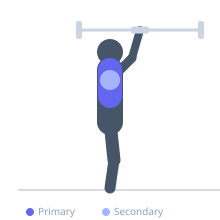
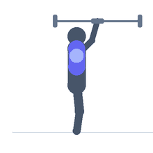

Exercise guide / Scapular Overhead Press
Scapular Overhead Press
The scapular overhead press begins at the top of a standard overhead press with elbows locked, then adds a final phase of scapular elevation (shrugging the shoulders upward) to fully load the upper trapezius and serratus anterior through the last degrees of overhead range. It is used to train the final phase of overhead reaching and to build the muscles responsible for upward scapular rotation.
Primary muscles
trapezius upper
Secondary muscles
deltoid anterior
Equipment
Standard Barbell
Optional
No Equipment (Bodyweight)


Starting position
- Hold dumbbells or a barbell at the locked-out overhead position — arms fully extended above the head, shoulders packed.
Setup
- Begin from the top of an overhead press. This can be done seated or standing. Moderate weight.
Steps
- Step 1: Begin with arms fully extended overhead.
- Step 2: From the locked position, shrug the shoulders upward toward the ears.
- Step 3: At peak elevation, the shoulder blades rotate upward fully.
- Step 4: Lower the shoulders back to the packed position.
- Step 5: Repeat the shrug without bending the elbows.
Coaching cues
- Arms stay straight — shrug is the movement
- Think 'ears to ceiling'
- Feel the traps working at the top
Breathing
- Exhale shrugging. Inhale returning.
Range of motion
- Packed shoulder position to full upward scapular rotation/elevation.
Tempo
- 1-2-2-0
Common mistakes
- Bending the elbows — this becomes a standard overhead press movement
- Only partial elevation — aim for maximum upward scapular rotation
Safety
- Ensure the arms are fully locked before beginning the shrug phase
- Avoid if shoulder impingement occurs at full overhead position
Training
- hypertrophy: 12–20 reps
- hypertrophy: 3–4 sets
- Rest: {'hypertrophy': 60}